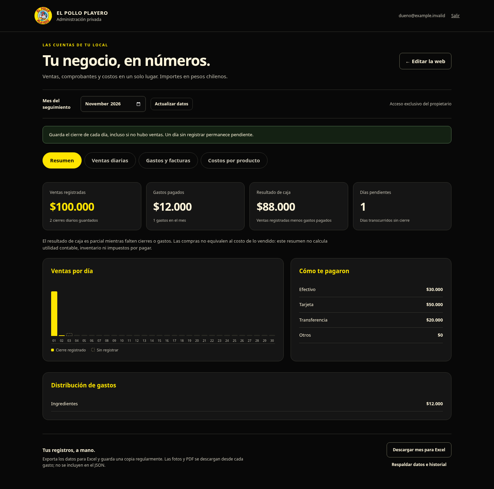

Tu panel de finanzas.
Preparado para registrar ventas desde el 1 de noviembre de 2026, guardar comprobantes privados y calcular costos por porción.
El código está listo. Esta actualización usa tu base de datos y acceso privado actuales. Las tablas de finanzas se crean al abrir la nueva sección; el contenido publicado de tu web se conserva.
Ver cómo se ve el panel
Vista de prueba con importes ficticios. No son ventas ni gastos reales de tu negocio.

1. Copia la actualización
Preparando el archivo del servicio.
Mostrar código para copiar manualmente
2. Actualiza el Worker que ya existe
- En Cloudflare, abre Compute → Workers & Pages → playero-gestion.
- Pulsa Edit code / Editar código. Selecciona todo el contenido del archivo principal
worker.jsy reemplázalo por el código copiado. - Pulsa Deploy / Publicar y espera la confirmación.
- Abre tu sección privada de Finanzas. Inicia sesión con tu correo autorizado si lo solicita.
Usa el Worker existente playero-gestion. Conserva el enlace DB → playero-admin, las variables y la aplicación de acceso actuales. No necesitas crear una cuenta, base de datos o dominio nuevos.
3. Prepara tus costos desde hoy
- En Costos por producto, crea tus insumos: por ejemplo, papas en kg, aceite en litros y cajas en unidades.
- En Gastos y facturas, registra una compra pagada y adjunta una foto o un PDF. Puedes usar compras anteriores a noviembre.
- Agrega el detalle del comprobante y vincula cada producto al insumo correspondiente. La suma de las líneas debe coincidir con el total pagado.
- Crea una receta indicando cantidades útiles, merma, porciones y otros costos. Verás su costo estimado por porción y margen sobre el precio de referencia.
Las fotos se adjuntan como respaldo; los datos se ingresan manualmente. Esta versión no incluye lectura automática de facturas. Los precios de las recetas no cambian el menú público.
4. Desde el 1 de noviembre
En Ventas diarias, abre el día y registra cuánto cobraste por efectivo, tarjeta, transferencia y otros medios. Registra las ventas antes de descontar comisiones y anota las comisiones como un gasto. Si el local estuvo cerrado, guarda los importes en cero. Los días que no completes seguirán pendientes.
El resumen muestra ventas, gastos pagados, resultado de caja y días pendientes. El resultado de caja no equivale a utilidad contable: no calcula inventario, costo de lo vendido ni impuestos por pagar.
Tus respaldos
Descarga el mes para Excel y una copia JSON con todos los registros e historial. El JSON no incluye fotos o PDF: descárgalos desde cada gasto y conserva también una copia de tu base D1.
Comprobantes: hasta 1,5 MB por archivo, con optimización de fotos grandes. Archivo privado de hasta 100 MB en esta versión; luego se puede ampliar con almacenamiento separado. Las consultas y el almacenamiento consumen las cuotas de tu cuenta Cloudflare.